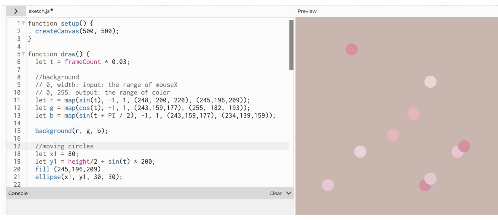

February 17, 2024
At the beginning of the project, I started by exploring the various codes we learned to get inspiration. After doing so, I started thinking about the overall vibe I wanted in my project. Over the break, there were various reds and pinks, which I wanted to utilize in my project. At first, I thought of creating something bubbly, but after adding different types of code, my concept changed into the ending blushy enveloping swirl. Throughout the processes, I realized that playing with the fill and background while adding fade can make cool images which are incorporated in my other sketches.
I first started by manipulating the oscillation utilizing frameCount and Sin, which I manipulated by changing the variable that was being multiplied with the Sin to make each circle move slower/faster. At first, I created vertical circle movement, but then I wanted to add horizontal movement which I did by utilizing Cos. By manipulating the frameCount, I managed to manipulate all of the circle's speeds while maintaining each of their own speed.
Changing Framecount Demo Video →In the project, I also explored circle position while incorporating oscillation and color motion which I did by utilizing the map tool, to define my RGB colors, and to take away the background. Originally, I utilized the map function for the background, however, in order to create a circle that leaves a trail, I decided to change my code to take away the background. You can see the difference in these two videos.
No Background Demo Video → Changing Filled Circle Demo Video →An issue I had at the start of the project was adjusting the color motion as I wanted specific shades of pink, but I realized you can't put in the typical three-variable RGB for a specific color. Another issue was allowing the Sin Oscillations to be shown with the color motion. This was solved by putting the code in different placements and changing the fill, as in order for the circle color motion to appear, I took away the background.
Overall in this project, I learned how to manipulate the fill which changed the presentation of the draw features. This allowed me to create this raining shadowy droplet effect. Another concept I enjoyed exploring was the map function which allows me to incorporate a range into my code which I utilized for my color motion.
Throughout the variety of illustrations I explored along the way, I have started an idea of the type of virus I want to create. The circular motion created by manipulating position and color can be utilized as an enveloping motion in my Project A. In addition, the waves remind me of the shape of DNA. By combining the two, I can create an illustration that represents a virus-consuming DNA. In addition, in the video below, I manipulated the oscillation size in order to create a kind of sketchy background, and by changing the size, I could make some areas appear darker/lighter.
Project Video on Google Drive →